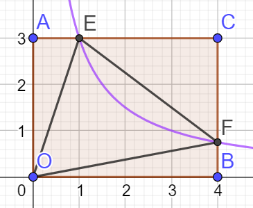

如图: $AB \parallel CD \parallel EF$ 则有结论:
$\frac{AC}{CE} = \frac{BD}{DF}$
$\frac{AC}{AE} = \frac{BD}{BF}$
证明如下:
连接$AD, DE, BC, CF$
$\because AB \parallel BC$
$\therefore S_{\Delta ACD} = S_{\Delta BCD}$
同理$S_{\Delta CDE} = S_{\Delta CDF}$
$\therefore \frac{S_{\Delta ACD}}{S_{\Delta CED}} = \frac{S_{\Delta BCD}}{S_{\Delta CDF}}$
$S_{\Delta ACD}$与$S_{\Delta CED}$有着共同的高$DP(DP\perp AE)$
$\therefore \frac{S_{\Delta ACD}}{S_{\Delta CED}} = \frac{AC}{CE}$
同理$\frac{S_{\Delta BCD}}{S_{\Delta CFD}} = \frac{BD}{DF}$
$\therefore \frac{AC}{CE} = \frac{BD}{DF}$

在上图中: $AB \parallel CD$
则有结论

如图, $BC \parallel DE$
则有结论: $\frac{AB}{AD} = \frac{AC}{AE} = \frac{BC}{DE}$
$(即S_{\Delta ABC} \sim S_{\Delta ADE})$
第二种形式

此时仍有(1.)中的结论
例题:

如图, $D为AB中点$, 求证 $\frac{BF}{CF} = \frac{AE}{EC}$
证明:

如图, 作$CG \parallel AB$ 交 $DF$ 与$G$
$\because AD \parallel CG$
$\therefore \frac{AE}{EC} = \frac{AD}{GC}$
又$\because BD \parallel CG$
$\therefore \frac{BF}{CF} = \frac{BD}{GC}$
且$AD = BD$
$\therefore \frac{BF}{CF} = \frac{AE}{EC}$
例题:

如图, $AB \parallel EF \parallel CD$
求证$\frac{1}{AB}+\frac{1}{CD}=\frac{1}{EF}$
证明：
$\because EF \parallel AB$
$\therefore \Delta ABC \sim \Delta EFC$
$\therefore \frac{EF}{AB}=\frac{CF}{BC}$
同理$\frac{EF}{CD}=\frac{BF}{BC}$
相加, 得
$\frac{EF}{AB}+\frac{EF}{CD}=\frac{CF+BF}{BC}$
$\frac{EF}{AB}+\frac{EF}{CD}=1$
同时除以$EF$得
$\frac{1}{AB}+\frac{1}{CD}=\frac{1}{EF}$

如图, $D, F, E$分别为$BC, AB, AC$的中点, 即,$O$为$\Delta ABC$的重心
则有:
$\frac{AO}{OD} = \frac{BO}{OE} = \frac{CO}{OF} = \frac{2}{1}$
证明如下:
如图, 连接$FE$.

$\because AF = BF$
且$AE=EC$
$\therefore$ $FE$为$\Delta ABC$的中位线
$\therefore \frac{FE}{BC} = \frac{1}{2}, FE \parallel BC$
$\therefore \Delta FEO \sim \Delta CBO$
$\therefore \frac{CO}{OF} = \frac{2}{1}$
同理可证:$\frac{AO}{OD} = \frac{BO}{OE} = \frac{CO}{OF} = \frac{2}{1}$
思想: 通过中点作平行线构造中位线.
例题:

如图, $D$为$BC$的中点, $AD$是$\Delta ABC$的中线, $F$为$AB$上任意一点, $FC$与$AD$交于$E$.
求证:
$AE \times BF = 2AF \times DE$
思路: 看到常数项$2$想到可以凑出$2AF$或者$2DE$但是都不容易, 考虑把$2$移项, 转而凑出$\frac{BF}{2}$, 此时我们可以通过作$DG \parallel AB$ 构造中位线得到$\frac{BF}{2}$
证明
作$DG \parallel AB$交$CF$于$G$
$\because BD=DC$
且$BF \parallel DG$
$\therefore DG$为$\Delta BCF$的中位线
$\therefore 2DG=BF$
又$AB \parallel DG$
$\therefore \frac{AE}{ED} = \frac{AF}{GD}$
$\therefore AE \times GD = AF \times ED$
其中$AF = BF = 2DG$
$\therefore AE \times \frac{BF}{2} = AF \times DE$
即$AE \times BF = 2AF \times DE$
解法二
思路: 其实非要使用$2DE$也可以, 我们知道$D$是$BC$中点, 想到倍长中线, 使用倍长中线构造$2DE$
证明:
作$AD$的延长线$DH$使$DH=ED$
连接$BH$

$\because ED = DH$
且$\angle EDC = \angle BDH$
且$BD=DC$
$\therefore \Delta BDH \cong \Delta CDE$
$\therefore \angle DBH = \angle DCE$
$\therefore FE \parallel BH$
$\therefore \frac{AF}{FB} = \frac{AE}{EH}$
$\therefore AF \times EH = AE \times FB$
其中$EH = 2ED$
$\therefore AE \times BF = 2AF \times DE$
例题: 如图:

$D,E$分别是$BC$的三等分点
$F$是$AC$的中点
求$BP:PQ:QF$
思路, 使用相等条件证明线段的位置与数量关系
证明:
连接$FE$
$\because AF=FC$
且$DE=EC$
$\therefore FE$ 为$\Delta ADC$的中位线
$\therefore FE \parallel AD$
又$BD=DE$
$\therefore PD$为$\Delta BFE$ 的中位线
$\therefore BP=PF$
设$PD=a$
则$FE=2a$
$\because AD \parallel EF$
即$\Delta CEF \sim \Delta CDA$
$\therefore \frac{DC}{EC} = \frac{AD}{EF}$
$\therefore AD = \frac{DC \times EF}{EC} = 2 \times EF = 4a$
$\therefore AP=3a$
又$FE \parallel AD$
$\therefore \Delta FEQ \sim \Delta PQA$
$\therefore \frac{PQ}{QF} = \frac{AP}{FE} = \frac{3a}{2a} = \frac{3}{2}$
同时$BP=PF$
$\therefore BP:PQ:QF=5:3:2$
如图

$AD$是$\Delta ABC$的角平分线, 有结论
$\frac{AB}{AC} = \frac{BD}{DC}$
证明如下
例题:
已知$AD$平分$\angle BAC$
求证$\frac{AB}{AC} = \frac{BD}{DC}$
方法一:
思路, 利用中点构造中位线解题
证明:
作$DE \parallel AB$交$AC$于$E$
如图: $\because BD=DC$
且$DE \parallel AB$
$\therefore ED$为$\Delta ABC$的中位线
又$\because \angle BAD = \angle DAC$
且$AB \parallel DE$
$\therefore \angle BAD = \angle EDA$
$\therefore \angle ADE = \angle DAE$
$\therefore AE=DE$
且$\Delta CDE \sim \Delta CBA$
$\therefore \frac{BD}{DC} = \frac{AE}{EC} = \frac{DE}{EC} =\frac{AB}{AC}$
解法2:
在三角形外作平行线, 证法类似1:
证明:
作$CE \parallel AD$交$BA$的延长线与点$E$
$\because CE \parallel AD$
$\therefore \Delta BAD \sim \Delta BEC$
$\therefore \angle BEC = \angle BAD$
而$\angle BAD = \angle DAC$
且$\angle DAC = \angle ECA$
$\therefore \angle AEC = \angle ACE$
$\therefore AC =AE$
$\therefore \frac{BD}{DC} = \frac{BA}{AE} = \frac {BA}{AC}$
解法3:
思路: 等面积法, 通过作垂直利用角平分线上的点到角两边距离相等证明
证明:
作$DF \perp AB$于$F$, 作$DE\perp AC$于$E$

由$D$在$BC$上
$\frac{S_{\Delta ADB}}{S_{\Delta ADC}}= \frac{BD}{DC}$
又$\because DF \perp AB$ $DE \perp AC$
且$AD$平分$\angle BAC$
$\therefore DF = DE$
$\therefore \frac{S_{\Delta ADB}}{S_{\Delta{ADC}}} = \frac{AB \times FD}{AC \times DE} = \frac{AB}{AC}$
$\therefore \frac{S_{\Delta ADB}}{S_{\Delta ADC}} = \frac{AB}{AC} = \frac{BD}{DC}$
补充:
如图

若$AE$是$\Delta ABC$的外角平分线
则$\frac{BE}{EC} = \frac{AB}{AC}$
证明如下:
例题:
已知$AE$平分$\angle BAC$的补角
求证:$\frac{BE}{EC} = \frac{AB}{AC}$
证明:
作$EF \parallel AC$

$\because AC \parallel EF$
$\therefore \Delta BAC \sim \Delta BFE$
同时$AC \parallel EF$
$\therefore \angle CAE = \angle AEF$
且$\angle CAE = \angle EAF$
$\therefore \angle AEF = \angle EAF$
$\therefore AF = FE$
$\therefore \frac{BE}{BC} = \frac{BF}{AB} = \frac{BF}{EF} = \frac{BA}{AC}$
若$\frac{a}{b}=\frac{c}{d}$
则
如图, $C$在$AB$上, 如果$C$满足:
$\frac{AB}{AC} =\frac{AC}{CB}$
则称$C$点是$AB$的黄金分割点
例题:
已知在线段$AB$上有一点$C$满足:
$\frac{AB}{AC} =\frac{AC}{CB}$
求$\frac{AC}{CB}$
解:
设$\frac{AB}{AC} =\frac{AC}{CB}=k$
$AB=AC\times k$
$AC = AB \times k$
$AB = CB \times k^2$
不妨设$AB=1$
则有$AC+BC=AB$
$\therefore \frac{1}{k^2}+\frac{1}{k}=1$
$\therefore k=\frac{2}{-1\pm \sqrt{1+4}}$
其中$k > 0$
$\therefore k=\frac{2}{-1+\sqrt5}=\frac{2\times (\sqrt5+1)}{4} = \frac{\sqrt5+1}{2}$
例题:
如图, 等腰三角形$ABC$中, $AB=AC$, $\angle BAC=36^\circ$, $D$是$AC$上一点, $\angle CAD=36^\circ$

求证: $D$点黄金分割$AC$
证明:
$\angle ABC=\angle ACB=72^\circ$
$\angle BDC = 72^\circ$
$BC=BD=DA$
$\because \angle A=\angle DBC=36^\circ$
且$\angle ACB=\angle BCD$
$\therefore \Delta ABC \sim \Delta BCD$
设$BC=a$
则$\frac{BC}{DC}=\frac{AB}{BC}$
$\therefore AB=\frac{a^2}{DC}$
而$AB=AC=AD+DC$
$\therefore a^2=a \times DC+DC^2$
即$\frac{a}{DC}=\frac{a+DC}{a}$
所以$D$黄金分割$AC$

如图, $CD\perp AB$,$AC \perp CB$则
$\Delta ADC \sim \Delta CDB \sim \Delta ACB$
$AC^2=AD\times AB$
$BC^2=DB \times AB$
$CD^2=DB\times AD$
证明:
$\because \angle A=90^\circ -\angle ACD = \angle DCB$
且$\angle ADC = \angle CDB = 90^\circ$
$\therefore \Delta CDB \sim \Delta ADC$
又$\angle CAB=\angle DAC$
且$\angle CDA=\angle BCA$
$\therefore \Delta ADC \sim \Delta ACB$
$\therefore \frac{AC}{AD}=\frac{AB}{AC}$
$\therefore AC^2=AB\times AD$
同理可证$CB^2=DB\times AB$
又有$\Delta CDB \sim \Delta ADC$
$\therefore \frac{AD}{CD}=\frac{CD}{DB}$
$\therefore CD^2 = AD\times DB$

如图, $\frac{AB}{BC}=\frac{5}{6}$, $BC=6EC$, $5FC=3CD$, $FG \perp AE$于$G$,
求证: $AG=4GE$
解法一:
证明:
设$AB=5a$
则$BC = AD=6a$
$BE=5a, EC=a$
$DF=2a, FC=3a$
$AF^2=AD^2+DF^2 = 36a^2+4a^2=40a^2$
$EF^2=EC^2+FC^2=a^2+9a^2=10a^2$
$AE^2=AB^2+BE^2=25a^2+25a^2=50a^2$
$\therefore AF^2+EF^2=AE^2$
$\therefore AF \perp EF$
$\therefore \Delta AGF \sim \Delta FGE$
而$\frac{AF}{EF}=\sqrt{\frac{AF^2}{EF^2}}=2$
$\therefore \frac{AG}{AF}= \frac{GF}{FE}$
$\therefore \frac{AG}{GF} = \frac{AF}{FE}=2$
同理$\frac{GF}{GE}=2$
$\therefore \frac{AG}{GF}\times \frac{GF}{GE}=\frac{AG}{GE}=2\times 2=4$
$\therefore AG=4GE$
解法2:
同1得到$\angle AFE=90^\circ$
由射影定理得
$\frac{AF^2}{EF^2}=\frac{AG \times AE}{EG \times AE}=\frac{AG}{EG}=\frac{4}{1}$
例题:

如图, $BD$平分$\angle ABC$, $CD$平分$\angle ACB$, $AE=AF$
求证$EF^2=4BE\times CF$
证明:

$\because BD, CD$交于$D$
$\therefore AD$平分$\angle BAC$
且$AE = AF$
$\because \angle AEF = 180^\circ -\angle BED$
$\because \angle EFA = 180^\circ -\angle CFD$
$\therefore 2\alpha + 2\beta + 360^\circ = 360^\circ + \angle BED + \angle CFD$
$\therefore \angle BED=\angle CFD=\alpha+ \beta$
$\therefore \angle EDB =\beta，\angle FDC = \alpha$
$\therefore \Delta BED \sim \Delta DFC$
$\therefore\frac{BE}{ED}=\frac{DF}{FC}$
$\therefore BE \times CF = DF \times ED = \frac{EF}{2}\times \frac{EF}{2}=\frac{EF^2}{4}$
$\therefore EF^2 = 4BE\times CF$
例题：
如图, $AB=AC$, $BD= DC$, $P$是$AD$上一动点, $CF \parallel AB$
求证$BP^2=PE\times PF$
证明:
连接$CP$,
$\because \angle PEC = \angle BAE + \angle ABE$
且$\angle PCF=\angle PCE + \angle ECF$
而$AB \parallel CF$
$\therefore \angle ECP= \angle BAE$
$\therefore \angle PEC = \angle BAE + \angle ABE = \angle ECF + \angle ACP = \angle PCF$
$\therefore \angle PEC=\angle PCF$
且$\angle FPC = \angle CPE$
$\therefore \Delta PEC \sim \Delta PCF$
$\therefore \frac{PE}{PC} = \frac{PC}{PF}$
$\therefore PC^2 = PE \times PF$
而$PC=PB$
$\therefore BP^2 = PE \times PF$
例题:

$\angle ACB=90^\circ$, $CD \perp AB$, $FH \perp AB$, $AC \perp CB$,$CF=3$, $FB=12$
求$FH$的长
解:
延长$AC$的到G, 使$GH \parallel CD$, 连接$GF$
$\because CD \parallel GH$
且$DE=CE$
$\therefore FH = FG$
$\because \angle BFH=\angle GFC$
且$\angle GCF=\angle BHF$
$\therefore \Delta GCF \sim \Delta BHF$
$\therefore \frac{CF}{FG}=\frac{HF}{BF}$
例题：

如图, $AC \perp CB$, $AF$平分$\angle CAB$交$CD$于$E$交$CB$于$F$, $EG \parallel AB$
求证:
- $\frac{CE}{ED}=\frac{BF}{FC}$
- $BF\times BG=CG\times CF$
- $CF=BG$
- $\frac{AE}{EF}=\frac{AC}{EG}$
证明:
$\because AF$平分$\angle CAB$
$\therefore \frac{CF}{FB}=\frac{AC}{AB}$
且$\therefore \frac{CE}{ED}=\frac{AC}{AD}$
又$CD \perp AB, AC \perp CB$
且$\angle CAB=\angle DAC$
$\therefore \Delta ACD \sim \Delta ABC$
$\therefore \frac{CA}{AD}=\frac{AB}{AC}$
$\therefore \frac{CE}{ED}=\frac{BF}{CF}$
$\because EG \parallel AB$
$\therefore \Delta CEG \sim \Delta CDB$
$\therefore \frac{CE}{ED}=\frac{CG}{GB}$
而$\frac{CE}{ED}=\frac{BF}{FC}$
$\therefore \frac{CG}{GB}=\frac{BF}{FC}$
即$CG \times FC = BF \times GB$
由和比性质:$\therefore \frac{CG}{BC}=\frac{BF}{BC}$
$\therefore CG=BF$
又有$\angle EAC = \angle EAD$
且$\angle EAD = \angle FEG$
$\angle FGE = \angle FBD$
$\angle ACD = 90^\circ -\angle CAD = \angle CBD$
$\therefore \angle FGE = \angle ACE$
且$\angle CAE = \angle FEG$
$\therefore \Delta AEC \sim \Delta EFG$
$\therefore \frac{AE}{EF} = \frac{AC}{EG}$
例题:

如图, $D$为$BC$中点, G为$\Delta ABC$的重心,$GF \parallel AC$
已知$S_{\Delta ABC}=36$, 求$S_{\Delta DGF}$
解:
$\because G$为重心
$\therefore S_{\Delta ADC} = \frac{1}{2} S_{\Delta ABC} = 18$
$且 \frac{AG}{GD}=\frac{2}{1}$
$\therefore S_{\Delta DFG} = \frac{1}{3^2} S_{\Delta ADC} = 2$
例题:

$Rt\Delta ABC中$, $\angle ACB=90^\circ$, $CM=MB$, $CN \perp AM于N$
求证:
$\angle MAB = \angle MBN$
$\because AC \perp CM$
$\therefore \Delta MCN \sim \Delta MAC$
$\therefore \frac{MN}{CM} = \frac{CM}{AM}$
而$CM=MB$
$\therefore \frac{MN}{MB} = \frac{MB}{AM}$
且$\angle NMB = \angle BMA$
$\therefore \Delta MBN \sim \Delta MAB$
$\angle MAB = \angle MBN$
例题:

在$\Delta ABC$中, $\angle BAC=90^\circ$, $AD \perp BC$, $DE \perp AB$, $DF \perp AC$
求证:
- $AE : EB = AC^2 : AB^2$
- $BE : CF = AB^3 : AC^3$
- $AD^3 = BC \times BE \times CF$
证明:
$\because AD \perp BC, DE \perp AB, DF \perp AC$
$\therefore \Delta BED \sim \Delta BAC$
$\therefore \frac{AE}{EB} = \frac{DC}{BD}$
由射影定理得:
$\therefore AB^2 = BD \times BC, AC^2 = DC \times BC$
$\therefore \frac{AE}{EB} = \frac{DC}{BD} = \frac{DC \times BC}{BD \times BC} = \frac{AC^2}{AB^2}$
看到(2)中的三次方,考虑使用四次方并消去一个
$\frac{AB^4}{AC^4} = \frac{BD^2 \times BC^2}{DC^2 \times BC^2} = \frac{BD^2}{DC^2}=\frac{BE \times AB}{CF \times AC}$
即$\frac{AB^3}{AC^3} = \frac{BE}{CF}$
对于(3)中的结论,也可以使用先算四次方并消去的方法.
$\space AD^4$
$= BD^2 \times DC^2$
$= BE \times AB \times CF \times AC$
$= BE \times CF \times (AC \times AB)$
由等面积法,可得 $AC \times AB = AD \times BC$
$AD^4 = BE \times CF \times AD \times BC$
即$AD^3 = BE \times CF \times BC$
例题:

$AD$是$\angle A$的角平分线, $AD$的中垂线$EF$与$AD$交于$E$
求证:
- $\frac{BD}{CD}=\frac{BF}{DC}$
- $BC=4, CF=3$时, 求$DF$
看到$\frac{BD}{CD}$想到使用角平分线定理
$\frac{BD}{CD} = \frac{AB}{AC} = \frac{BF}{DC}$
类似"母子相似"的结论, 考虑连接 $AF$ 证明$\Delta FBA \sim \Delta FAC$
证明:
连接$AF$, 如图所示

$\because EF$垂直平分$AD$
$\therefore FA = FD, \angle FAD = \angle FDA$
又有$AD$平分$\angle CAB$
即$\angle CAD = \angle DAB$
$\therefore \angle FAD - \angle CAD = \angle FDA - \angle BAD$
$\therefore \angle ABC = \angle CAF$
且$\angle AFC = \angle BFA$
$\therefore \Delta FAC \sim \Delta FBA$
$\frac{AC}{AB} = \frac{FA}{FB}$
同时$FA = FD$
$\frac{AC}{AB} = \frac{FD}{FB}$
$\frac{AB}{AC} = \frac{BD}{CD}$
从而得出结论
$\frac{BD}{CD} = \frac{FB}{FD}$
对于第二问,可以使用第一问的相似继续证明.
$\frac{AF}{BF} = \frac{CF}{AF}$
$AF^2 = BF \times CF$
$\therefore DF = AF = \sqrt{BF \times CF} = \sqrt{21}$
例题:

在如图所示的三角形中, 满足, $\angle ACB = 2 \angle B$
求证:
$AB^2 = AC^2 + AC \times BC$
以$A$为圆心, $AC$为半径,画弧交$BC$于D, 作$AE \perp BC$于$E$

在等腰三角形$\Delta ADC$中, $AC = AD$, $\angle ADC =\angle ACD$
$\therefore \angle ADC = \angle ABC + \angle DAB = 2\angle B$
$\therefore \angle ABD = \angle DAB$
$\therefore BD = DA = AC$
$\therefore AB^2 = AE^2 + BE^2$
$= BD^2 + DE^2 + 2BD \times DE + AE^2$
$= AD^2 + BD^2 + 2BD \times DE$
$= AD^2 + BD \times (BD + 2DE)$
$= AD^2 + BD \times (BD + DC)$
$= BD \times BC + AD^2$
$= AC^2 + AC \times BC$
例题:
在边长为$2cm$的正方形$ABCD$中, 动点$E,F$分别从$D,C$两点同时出发, 均以$1cm/s$的速度在射线$DC$, $CB$上运动, 连接$AE$与$DF$交于点$P$, $Q$是$AD$的中点, 若以$APQ$为顶点的三角形与$PDC$为顶点的三角形相似, 运动时间为?
分析:
如图
通过证明$\Delta DFC \cong \Delta AED$易证$PF \perp AE$
$\because PE \perp AE$
$\therefore AQ = QD = QP$
$\Delta APQ$为等腰三角形
当条件满足时$\Delta DPC$一定是等腰三角形
可以通过分类讨论哪两条边相等进而解决问题
分类讨论:
- $PC = PD$
此时$P$在$CD$的垂直平分线上
而P是交点, 此时$t=2$
- $PC = CD$
此时$E在C下方$
如图:

$\because \Delta DPE$为直角三角形
$\therefore CE = CD = 2cm
$t=4$
- $PD = CD$
不存在, 舍去
总结:
P点的轨迹如图所示

$P$所在的圆弧与满足DPC是等腰三角形的"两圆一线"有两个交点(A点不可能达到), 即两种情况
两个变量, 每个自变量的取值对应且仅对应一个因变量的取值.
不是所有函数都有解析式!!!等
定义域: $x \ne 0$
值域: $y \ne 0$
如图:

是双曲线 (有两支)
关于原点中心对称, 关于每个象限的角平分线($y=x$与$y=-x$)对称
$k>0$时, 函数在一三象限
$k<0$时, 函数在二三象限
$k>0$时, y随x的增大而减小
$k<0$时, y随x的减小而增大
前提条件: 在每个象限内!!!
$\left|{k}\right|$越大, 图像越远离原点
双曲线无限逼近坐标轴, 但并不相交

如图$S_{\square ABOC} = \left| ab \right| = \left| k \right|$
例题:
$OA_1 = A_1A_2 = A_2A_3$, 分别过$A_1/A_2/A_3$作y轴的平行线, 与反比例函数$y=\frac{4}{x}$交于$B_1/B_2/B_3$, 再作关于x轴的平行线,交x轴于$C_1/C_2/C_3$, 求图中阴影面积之和
$S_1 = \frac{k}{2} = 2$
$S_2 = \frac{k}{2} \times \frac{S_{\Delta B_2C_2O}}{S_{\Delta B_2AD}} = 2 \times (\frac{A_1A_2}{OA_2})^2 = \frac{1}{2}$
同理$S_3 = 2 \times (\frac{A_2A_3}{OA_3})^2 = \frac{2}{9}$
$S = S_1 + S_2 + S_3 = 2 + \frac{1}{2} + \frac{2}{9}$

证明如下:
$S_{\Delta OAC} = S_{\Delta OBD}$
同时减去$S_{\Delta OFC}$
$S_{\Delta OFA} = S_{\square FCDB}$
同时加上$S_{\Delta AFB}$
$S_{\Delta OAB} = S_{\square ABDC}$
例题:

$\frac{AO}{AB} = \frac{2}{3}$, $S_{\Delta BOD} = 32$
求$y=\frac{k}{x}$
解:
作$AE \perp OC$于点$E$
$\because AE \perp OC, BC \perp OC$
$\therefore AE \parallel BC$
$\therefore \Delta OEA \sim \Delta OCB$
又有$\frac{OA}{AB} = \frac{2}{3}$
$\therefore \frac{S_{\Delta OEA}}{S_{\Delta OCB}} = \frac{4}{25}$
$\therefore S_{\Delta ADB} = S_{\Delta OAD} + S_{\Delta ADB} = S_{\square ADCE} + S_{\Delta ADB} = S_{\square ABCE}$
$\therefore \frac{S_{\Delta OEA}}{S_{\square ABCE}} = \frac{4}{21}$
$\therefore S_{\Delta OEA} = S_{\square ABCD} \times \frac{4}{21} = 4$
$\therefore k = 2 \times \Delta OEA = 8$
故而$y = \frac{8}{x}$
例题
$OB=4, OA=3$, 反比例函数$y=\frac{k}{x}$交$AC$与$E$, 交$CB$于$F$
- 求证$S_{\Delta AOE} = S_{\Delta BOF}$
- $S = S_{\Delta OEF} - S_{\Delta ECF}$, 求$k$为何值时, $S$取得最大值, 最大值是多少?
证明:
$S_{\Delta AOE} = \frac{k}{2}$
$S_{\Delta BOF} = \frac{k}{2}$
设 $E(\frac{k}{3}, 3)$ $F(4, \frac{k}{4})$
$S_{\Delta OEF} = (4-\frac{k}{3})(3+\frac{k}{4})\times \frac{1}{2}$
$S_{\Delta ECF} = (4-\frac{k}{3})(3-\frac{k}{4})\times \frac{1}{2}$
$S = k - \frac{k^2}{12} = -\frac{1}{12}(k^2 - 12k + 36) + 3 = -\frac{1}{12}(k-6)^2 + 3$
当$k=6$时, $S$取得最小值为$3$

证明:
如图:

$S_{\square OFAC} = S_{\square ODBH}$
同时使用$S_{ODEC}$减去
得到$S_{\square HBEC} = S_{\square FDEA}$
$S_{\square HBEC}$与$S_{\square ODBH}$有着相同的长
$\frac{S_{\square HBEC}}{S_{\square ODBH}} = \frac{BE}{DB}$
同理$\frac{S_{\square FDEA}}{S_{\square OFAC}} = \frac{AE}{CA}$
$\frac{AE}{CA} = \frac{S_{\square FDEA}}{S_{\square OFAC}} = \frac{S_{\square HBEC}}{S_{\square ODBH}} = \frac{BE}{DB}$

即 $y_1 = \frac{4}{x}$
$y_2 = 3x + 4$
应当分段考虑, 将$x > 0$时$y_2$的函数值与$y_1$的上半段比较:
| 自变量 | 因变量 |
|---|---|
| $x>\frac{2}{3}$ | $y_1<y_2$ |
| $x=\frac{2}{3}$ | $y_1=y_2$ |
| $0<x<\frac{2}{3}$ | $y_1>y_2$ |
| $-2<x<0$ | $y_1<y_2$ |
| $x=-2$ | $y_1=y_2$ |
| $x<-1$ | $y_1>y_2$ |
对于$x<0$的类似处理

$y_1 = \frac{4}{x}$
$y_2 = -x + 8$
| 自变量 | 因变量 |
|---|---|
| $x<0$ | $y_2>y_1$ |
| $x<4-2\sqrt3$ | $y_2 < y_1$ |
| $x=4-2\sqrt3$ | $y_2 = y_1$ |
| $4+2\sqrt3>x>4-2\sqrt3$ | $y_2 < y_1$ |
| $x=4+2\sqrt3$ | $y_2 = y_1$ |
| $x>4+2\sqrt3$ | $y_2 > y_1$ |
例题:
如图$A(1,4), B(4,1), C(4,4)$
$y=\frac{k}{x}$ 与三角形有焦点，求$k$的取值范围
函数经过A点时, $k=4$
函数经过B点时, $k=4$
函数经过C点时, $k=16$
$$ \begin {cases} k > 4 \ k > 4 \ k < 16 \end {cases}$$
$\therefore 4 < k < 16$
总结:
例题:
已知点$A(1,2)$点$B(4,1)$, 若反比例函数$y=\frac{n}{x}$的图像与线段$AB$有公共点, 求$n$的取值范围
思路:考虑函数经过端点的情况和线段时函数的切线的情况
解答:
函数经过$A$点时, $n=2$
函数经过$B$点时, $n=4$
线段所在的直线是反比例函数的切线时
$y=-\frac{1}{3}x+\frac{7}{3}$ 与函数 $y=\frac{n}{x}$有且仅有一个交点
$x^2 - 7x + 3n = 0$
$\Delta = 49 - 4 \times 3n = 49 - 12n$
$\Delta = 0$时, 两个函数有且仅有一个交点
$n = \frac{49}{12}$
此时交点的横坐标$1 < \frac{7}{2} < 4$, 在线段$AB$上
有:
$$ \begin {cases} n \le 2 \ n \le 4 \ n \ge \frac{49}{12} \end {cases} $$
得到: $2 \le n \le \frac{49}{12}$
总结: 对于线段来说
例题:
如图, 一次函数与反比例函数交于$A,B$, 与坐标轴交于$M,N$, $A,B$向坐标轴作垂线, 交坐标轴于$C,D,E,F$.
求证:
- $S_{\square AEDK} = S_{\square CFBK}$
- $AN = BM$
证明:
$\because S_{\square AEOC} = S_{\square BDOF} = k$
$\therefore S_{\square AEOC} - S_{\square DKCO} = S_{\square BDOF} - S_{\square DKCO}$
$\therefore S_{\square AEDK} = S_{\square BKCF}$
连接 $DC, AD, BC$
$\because S_{\Delta ADK} = S_{\Delta BKC} = \frac{S_{\square AEDK}}{2}$
$\because S_{\Delta DKC} = S_{\Delta DKC}$
$\therefore S_{\Delta DCA} = S_{\Delta DCB}$
$\therefore DC \parallel AB$
$\therefore AC \parallel y轴$
$\therefore \square ANDC为平行四边形$
$同理 \square BMCD为平行四边形$
$\therefore DC = AN$
$\therefore DC = BM$
$\therefore AN = BM$